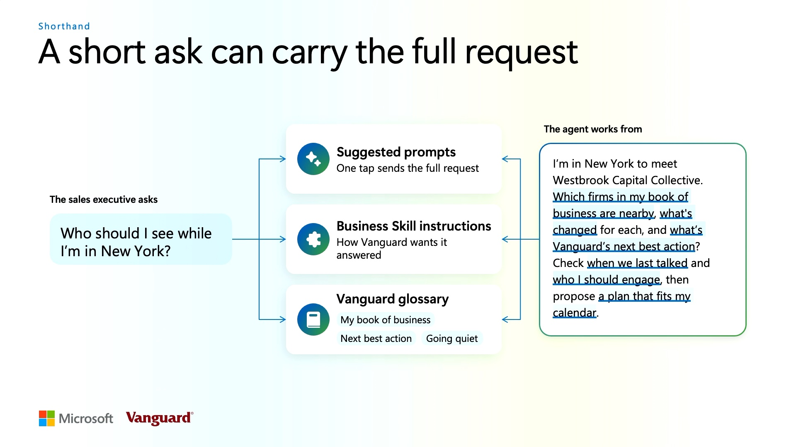
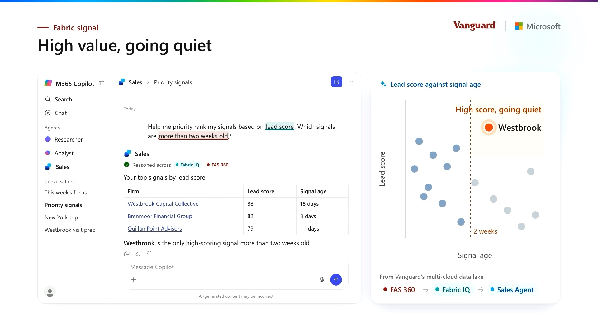
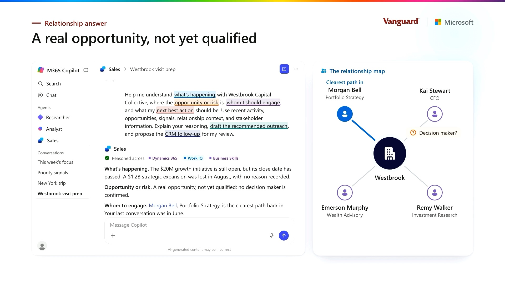
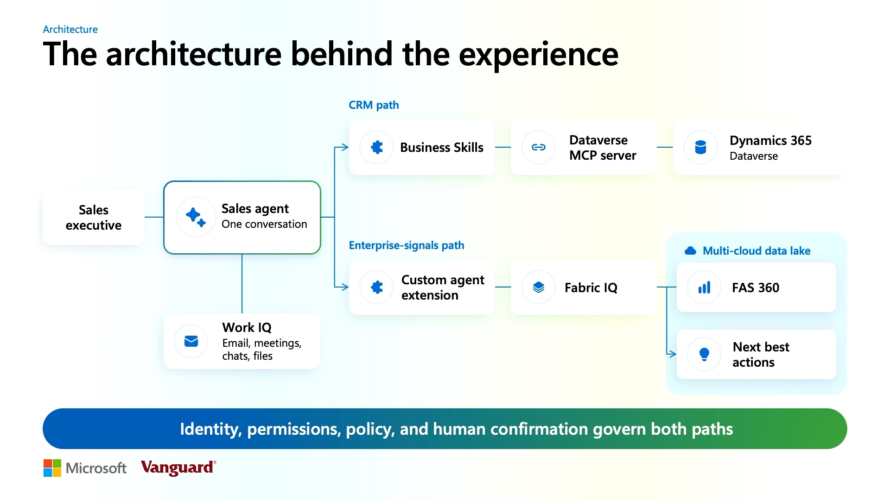

THR916 官方课件实拍 · 04:20
简短提问承载完整意图：业务技能指令与专属词汇表自动扩写
销售只需输入一句“去纽约该见谁”，业务技能即自动注入账簿范围、近期变动、下一步最佳行动与日历排程规则 [1][2]。
在覆盖全美约 300,000 名外部理财顾问的机构分销网络中，Vanguard 财务顾问服务部（FAS）数百名销售代表过去不得不充当人工集成层，在客户关系管理系统、邮件会议与多云数据湖之间来回切换以拼凑拜访线索 [1][2]。在 Ignite 2026 剧场专场 THR916 中，微软前线部署工程经理 Sangeeta Iyer 与 Vanguard 技术负责人 Chris Zahner 联合拆解了基于 Microsoft 365 Sales Agent 构建的顾问辅助架构 [1][2]。该方案通过 Dataverse 模型上下文协议连通超过 40 项可读写的业务技能，并借助 Microsoft Fabric IQ 桥接外部多云数据湖信号，将行程筛选、会前简报、外联起草与记录回写收拢至全程受人工审核把关的单一会话中；在 7 人生产试点阶段，单条高频提示词每天即可为一线销售节省 40 分钟检索时间 [1][2]。
01 / Fragmented Stack & 40+ Skills
Vanguard 旗下的财务顾问服务部（Financial Advisor Services）是一项典型的机构分销业务：全美数百名一线销售人员常年奔波在曼哈顿金融高楼与中部单人理财工作室之间，面对面服务约 300,000 名外部理财顾问，推动各类基金产品进入终端投资者的资产组合 [1][2]。一名出差在外的销售代表每周要密集会见数十位客户，但支撑高质量对话的上下文却散落在割裂的软件栈里 [1]。
过去，销售人员本人被迫充当这套软件栈的“人工集成层” [1][2]。哪怕只是回答一句看似简单的日常提问——“我下周去纽约出差，顺路还该见谁？”——他们也必须手工登录客户关系管理库核对机构档案，翻阅邮件与聊天记录回顾上次沟通纪要，再切入名为 FAS 360 的外部多云数据湖以及多张商业智能报表，逐一比对近期资金净流向、顾问平台准入产品清单与系统推荐的下一步最佳行动 [1][2]。同栋写字楼里往往还驻扎着同一机构的多位顾问，谁值得顺道拜访、哪段时间能塞进行程表，全靠人脑在多块屏幕之间硬拼 [1]。
为了把一线团队从繁琐的跨系统检索中解放出来，Vanguard 与微软联合团队没有停留在浅层的问答检索，而是将高频复合提问逆向拆解为底层子提示词，沉淀出一套包含超过 40 项原子能力的业务技能库（Business Skills）[1][2]。这套技能库不仅注入了“负责账簿（Book of business）”“静默转冷（Going quiet）”等内部业务黑话与评判标准，更打通了双向读写闭环——让智能体既能跨源拉取证据，也能按规范起草核心业务系统的待审回写记录 [1][2]。下方点播导览台汇总了本场 22 分钟剧场演讲的官方视频流与五幕逐分钟关键节点 [1][2]：
切换业务痛点与 40+ 技能库、纽约顺路排程实机闭环、三大受监管信任原则、双路 MCP/Fabric 架构及 40 分钟提效实测五大章节，支持在页内直接加载微软官方点播流。
02 / Compound Field Walkthrough
由于复合提示词在后台跨系统推理最长可能耗时近 1 分钟，且受金融机构生产数据隐私保护限制，Sangeeta Iyer 在现场展示了基于真实环境脱敏数据录制的端到端工作流 [1][2]。整场演示串联起周一晨间盘点、高分沉寂预警、同城顺路筛选与会前深度备战四个紧密咬合的业务切面 [1][2]：
周一清晨，销售代表仅问一句“本周哪些客户关系最需要我关注？”，智能体随即横跨客户档案、近期活动与企业信号给整本账簿排序，将 Westbrook Capital Collective 推至榜首 [1][2]。紧接着销售用内部术语追问：“按线索分给信号排序，标出哪些已超过两周”，Microsoft Fabric IQ 从外部多云库调出前三名：Westbrook（88 分 · 已达 18 天）、Brenmoor Financial Group（82 分 · 3 天）与 Quillan Point Advisors（79 分 · 11 天）——一眼揪出极易被人工遗漏的“高价值但正在转冷”风险 [1][2]。
既然已计划赴纽约拜访锚点客户 Westbrook，销售顺势发出一句简问：“我在那边还该见谁？” [1][2]。智能体自动带入潜在业务规则并返回清晰列明“入选或剔除理由”的五家同城机构：Corvane Wealth Partners（入选：多云库监测到资金流出信号）、Pellward Advisory Group（入选：新任首席信息官履新）、Tilwick Wealth Advisors（入选：跟进事项逾期）；而 Larkspan Family Office 因上周刚见过面、Marrowfield Capital Advisors 因当前无待办推荐行动，双双被明确排除在名单之外 [1][2]。
若机械按照线索优先级高低依次登门，销售代表将在曼哈顿与布鲁克林之间来回折返横穿市区 [1][2]。智能体结合地理位置与现有日历空档，将保留下来的三家顺访机构与锚点会面重排为单趟顺路动线，把消耗在出租车上的通勤时间重新还给客户对话 [1][2]。
登门前夕，销售要求全面梳理 Westbrook 现状、风险、切入人选并起草外联邮件与系统跟进单 [1][2]。智能体严格依据记录事实作答：一笔 **2000 万美元（USD 20M）**增长计划虽仍开放但预计成交日已过，今年 8 月曾丢掉一笔 **12 亿美元（USD 1.2B）**战略扩张项目且未登记原因，当前关键决策人尚未确认；6 月曾有过沟通的投资组合策略负责人 Morgan Bell 是最清晰的破局切入口 [1][2]。随后系统直接调取多云数据湖预置的确定性下一步最佳行动（绝非模型临场自由编造）——“召开工作坊重新定级商机、锁定决策人并敲定一项带日期的里程碑”，同步备妥致 Morgan Bell 的邮件草稿与客户系统待审记录 [1][2]。

销售只需输入一句“去纽约该见谁”，业务技能即自动注入账簿范围、近期变动、下一步最佳行动与日历排程规则 [1][2]。

交叉比对线索分与信号年龄，标出唯一超过两周静默期的高价值机构 Westbrook（88 分 · 18 天）[1][2]。
将实机演示中的线索分、沉寂天数与两周排重规则投射到二维平面，可以清晰看清智能体是如何替人类完成高频筛选计算的 [1][2]：
03 / Regulated Trust & Dual-Path Architecture
在资产管理与证券分销这类强监管行业落地生成式工具，绝不是“把聊天助手简单连上客户数据库”就能交差 [1]。Sangeeta Iyer 指出，整套工程建立在三条不可妥协的设计原则之上：第一，智能必须通过日常办公入口主动送达销售手边；第二，Vanguard 始终是所有数据与推荐动作的唯一事实源，模型负责检索拼装证据而非临场臆造投资或销售策略；第三，人类在每一刻都握有最终控制权——未经销售代表本人点选确认，系统绝不会擅自对外发出一封邮件，也绝不会往后台数据库写入任何一条记录 [1][2]。
更棘手的挑战来自 Vanguard 内部复杂的企业级现状 [1][2]。在后台，Vanguard 采用单一共享的 Dynamics 365 与 Dataverse 实例同时支撑多条业务线与多套上层应用，大量关键业务规则与合法性校验不仅存在于后端存储层，还分散在前端展示层逻辑中 [1][2]。与此同时，安全合规要求把信任机制内嵌进每一步动作：智能体严格运行在当前登录用户的委托身份与权限边界之内（人类看不见的数据、做不了的操作，智能体同样无权触碰）；一旦检索时撞上重名联系人或重复商机，智能体会主动暂停并向用户追问澄清；所有回写动作一律弹出交互确认框交由人工终审 [1][2]。

如实呈现决策人空缺现状而不夸大推断，精准标出上次于 6 月沟通的 Morgan Bell 作为最佳切入路径 [1][2]。

上路经 Dataverse MCP 运行业务技能读写客户系统，下路经自定义扩展与 Fabric IQ 接入非微软生态多云数据湖 [1][2]。
围绕上述约束，微软前线部署工程（Forward Deployed Engineering）团队连续数周直接进驻 Vanguard 办公楼，与客户工程团队结成单一联合敏捷小组（Co-Scrum Team）[1][2]。当真实环境中的共享库表规则或跨云链路令标准特性受阻时，前线工程师直接联动微软内部的智能体、商业应用与数据平台产品组双向打磨并反哺产品路线图，最终收敛出清晰的三源双路架构 [1][2]：
04 / Production Pilot & Roadmap
从手工拼图切换至双路智能体协同后，Vanguard 一线销售作业流在四个核心工程维度上实现了代际跨越 [1][2]：
| 作业与架构维度 | 改造前：人类充当系统集成层 | 改造后：M365 Sales Agent 双路协同架构 |
|---|---|---|
| 信息检索与会前准备 | 人工横跨客户系统、邮箱聊天、多云数据湖与多张报表逐屏核对拼凑 [1][2] | 一句自然语言简问触发 Work IQ + Dataverse MCP + Fabric IQ 自动聚合证据链 [1][2] |
| 出差名单与路线规划 | 手工比对同楼或周边机构，按原始优先级拜访易在城区往返折返耗费通勤 [1][2] | 透明呈现入选与排重理由（如剔除两周内刚见客户），结合日历排成单趟顺路动线 [1][2] |
| 策略生成与数据主权 | 各系统信号割裂，高分但超过 14 天未触达的静默商机极易被人工漏看 [1][2] | 严格调取 FAS 360 预置确定性下一步最佳行动，如实标注决策人空白，绝不臆造 [1][2] |
| 合规权限与系统回写 | 依赖人工切换多业务线共享表单逐项补录跟进纪要，耗时且易遗漏 [1][2] | 继承用户最小权限、重名暂停核实，自动起草外联邮件与跟进单并经人工确认回写 [1][2] |
在演讲披露的最新进展中，这套顾问辅助方案已在 Vanguard 生产环境中面向约 7 名一线销售人员开展实机试点，并计划在未来数月全面推广至部门全部数百名销售代表 [1][2]。Chris Zahner 分享了一组极具说服力的一线反馈：试点团队中有一名销售代表仅凭自己在日常工作中打磨出的一条高频提示词，每天就能稳定节省 40 分钟机械检索时间——省下的宝贵时段被直接投入高价值的客户关系深耕，推动更多基金产品配置进终端客户组合 [1][2]。现场问答环节还补充了一项关键的语音合规细节：受监管约束，Vanguard 不会对销售通话直接录音 [1]。团队改为在电话、线上会议与当面拜访后运行转写与自动摘要流水线，将结构化纪要写入客户系统并下沉至多云数据湖，反过来持续提升下一步最佳行动的推荐精度 [1]。
面向下一阶段演进，Vanguard 已锚定三大技术扩展方向 [1][2]：其一，目前接入多云数据湖的场景仍只是“冰山一角”，团队将持续扩展技能库深度，挖掘更多底层交易与持仓异动信号；其二，打通更多第三方与内部专业内容库——特别是将存有各只基金背景及**经合规部门审批通过的标准话术库（Compliance-approved content & talking points）直接内嵌至外联邮件起草环节；其三，积极引入本届大会新发布的智能体自治循环（Autopilots / Agent Loops）**能力，让部分成熟技能在团队协同空间内按规则后台值守运行，使企业数据在关键时机溜走前主动推演并唤醒销售代表 [1][2]。
05 / References: Official Primary Sources & Technical Documentation